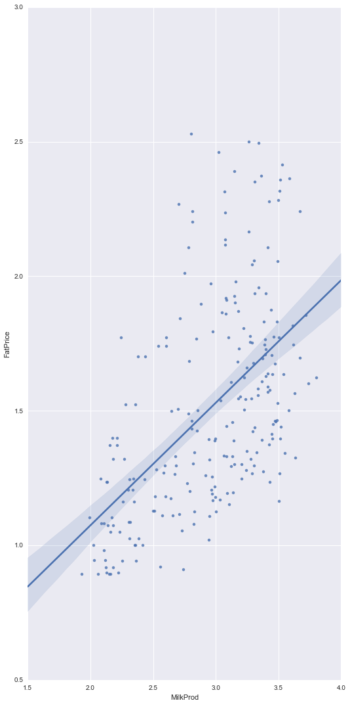

Regression Model
for Predicting Fat Price
In this post, I will built a linear regression model to predict the fat price using the production of cottage cheese, icecream, and milk. The data can be dowloaded from here ... read more.

Ph.D. candidate, Binghamton University
Graduate Research Associate, Watson Institute for Systems Excellence - WISE
Resume


Regression Model
for Predicting Fat Price
In this post, I will built a linear regression model to predict the fat price using the production of cottage cheese, icecream, and milk. The data can be dowloaded from here ... read more.